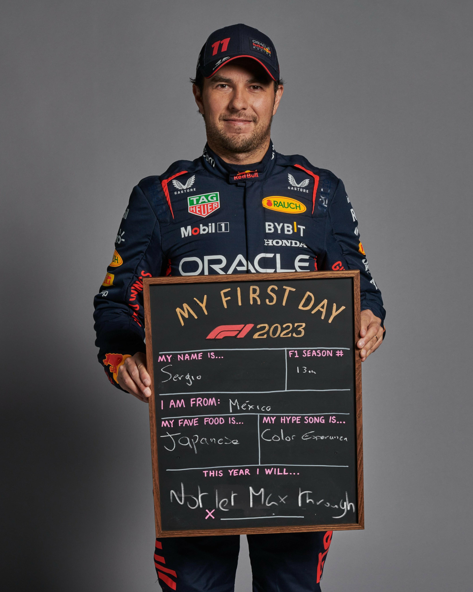
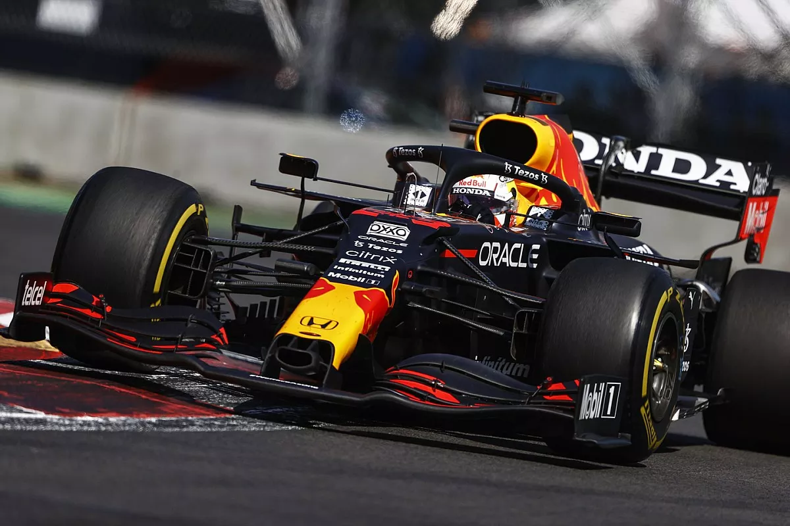

Algunas métricas de F1
Un estudio técnico sobre la eficiencia de los pilotos mediante modelos lineales, analizando la relación entre velocidad, aceleración y tiempo por vuelta.
Leer ArtículoExplorando el rendimiento de los pilotos a través de datos estáticos extraídos con FastF1 y procesados con Pandas.

Un estudio técnico sobre la eficiencia de los pilotos mediante modelos lineales, analizando la relación entre velocidad, aceleración y tiempo por vuelta.
Leer Artículo
Espacio reservado para nuevas investigaciones sobre datos históricos y rendimiento de escuderías.
Próximamente